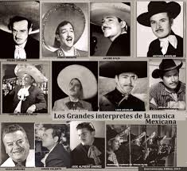

Exponentes de la Musica Mexicana

Figuras Clasicas
- Pedro Infante: Actor y cantante iconico de la epoca de oro del cine mexicano.
- Jorge Negrete: Voz potente y presencia escenica, interprete de musica ranchera.
- Lola Beltran: Reconocida por su interpretacion de canciones vernáculas.
- Jose Alfredo Jimenez: Compositor de temas inmortales como "El Rey" y "Camino de Guanajuato".
- Vicente Fernandez: Considerado el maximo exponente del mariachi tradicional.
Artistas Contemporaneos
- Luis Miguel: Cantante de baladas, boleros y pop latino, conocido como "El Sol de Mexico".
- Cafe Tacvba: Banda de rock alternativo con fuerte identidad mexicana.
- Natalia Lafourcade: Cantautora que fusiona sonidos tradicionales con estilos modernos.
- Christian Nodal: Figura clave del nuevo regional mexicano y mariachi moderno.
- Angela Aguilar: Joven interprete de musica ranchera con herencia familiar artistica.
Exponentes del Regional Urbano
- Junior H: Representante de los corridos tumbados y sonidos urbanos.
- Peso Pluma: Fusiona corridos con trap y regueton, popular entre las nuevas generaciones.
- Fuerza Regida: Grupo que mezcla musica norteña con letras urbanas y estilo callejero.